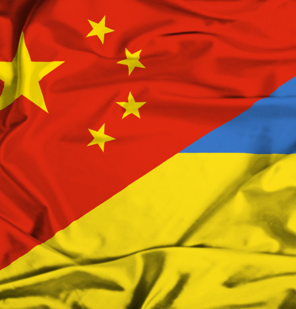

乌克兰（乌克兰语：УКРАЇНА）位于欧洲东部，东接俄罗斯、南濒黑海，北与白俄罗斯毗邻、西与波兰、斯洛伐克、匈牙利、罗马尼亚和摩尔多瓦诸国相连。乌克兰地理位置重要，是欧洲联盟与独联体特别是与俄罗斯地缘政治的交叉点。 在9世纪时，乌克兰历史上的基辅罗斯，作为东斯拉夫人的国家曾一度十分强盛，直至12世纪分裂。19世纪时，乌克兰大部归属于俄罗斯帝国，其余部分为奥匈帝国领土。在一战和俄国革命的混乱时期，乌克兰曾在1917年至1921年短暂独立。在乌克兰内战后，乌克兰苏维埃社会主义共和国在1922年成为了苏联创始加盟共和国之一，是次于俄罗斯第二大加盟共和国。1991年苏联解体后乌克兰重获独立。
乌克兰作为世界上重要的市场之一，是世界上第三大粮食出口国，也是资本主义国家。有着“欧洲粮仓”的美誉乌克兰工农业较为发达，其农业产值占国内生产总值20%。重工业在工业中占据主要地位。
首都
基辅，常驻人口580万。面积827平方公里。全国政治、经济、文化、科学中心。8月最高气温36℃，1月最低气温-20℃。乌克兰货币为格里夫纳。1美元=25.5格里夫纳（2017年8月）
文化
乌克兰文化政策的宗旨是：国家对文艺组织和艺术家提供法律保障，支持民族文化的发展，不对其实行政治或行政干预，保持文化艺术在其存在和发展过程中所表现出的自身价值和独立性，保证创作自由，保存文化遗产，为各民族人民进一步发展其传统文化创造必要条件。吸引各方资金，以支持文化基层单位和重要文艺机构开展活动。截至2010年底，乌共有国家级剧院138所，各级博物馆478家，各类图书馆2.06万个，藏书3.52亿册。国家级文物保护单位1,88万个。
教育
教育体制主要由学前教育、普通中等教育、职业技术教育、高等教育组成，还有校外教育、继续教育、副博士研究生教育、博士研究生教育、自学教育。截至2017年底，乌共有975所高校，教师42,4万，招收学生24,9万。著名大学有基辅国立大学、国立技术大学（基辅工学院）、乌克兰国立柴可夫斯基音乐学院、乌克兰国立工艺美术学院，乌克兰国立师范大学，基辅国立经贸大学，基辅国立外国语大学，基辅巴卡莫列次国立医科大学，基辅国立体育大学，基辅国立航天航空大学，哈尔科夫国立大学、哈尔科夫国立师范大学、利沃夫国立大学、辛菲罗波尔国立大学、敖德萨音乐学院等。
科技
乌克兰是独联体国家中科技实力仅次于俄罗斯的科技大国，前苏联时期出于 " 冷战 " 的需要，乌克兰偏重开展了以航天、军工为中心的科研生产活动，苏联解体之后，给乌克兰留下了一个庞大的以军工为核心的科研生产体系。乌克兰有数百家企业和数十个科研单位涉及航天技术，其中心和基地是位于东部城市第聂伯彼得罗夫斯克的《南方设计局》和《南方机械制造厂》。这里先后设计并制造了四代战略导弹、其中包括举世闻名的 " Космос " " Циклон -2" " Циклон -3" " Зенит " 等型号运载火箭，发射了 " Океан " 多功能遥感卫星。乌克兰是国际空间站计划成员国，国际空间站上建有 " 乌克兰舱 " 。 1995 年乌克兰与美、俄、挪威合建国际著名的 " 海上发射 " 合资企业，利用海上浮动发射平台，发射商用卫星，所用运载火箭就是乌克兰著名的 " Зенит－З SL" 火箭。另外乌在地球通信卫星、地球和海洋资源卫星、空间遥感，小卫星应用等方面也拥有巨大的科技潜力。
景点
喀尔巴阡山脉原始山毛榉林
由10个跨国的连续遗产组成，沿185公里的轴线，从乌克兰拉希夫山脉和Chornohirskyi西沿Polonynian山脊，一直到斯洛伐克的Bukovské Vrchy和Vihorlat山脉。这10个遗址是原始的、多元的温带森林的突出例子，展示了最完整、最广泛的生态模式和纯粹的欧洲山毛榉群丛在各种环境条件下的生长过程。它们包含着宝贵的山毛榉基因库和与这些森林栖息地相关并依赖其生存的许多生物。它们还是上一个冰河时代后陆地生态系统和群落再移植和发展的突出例子。帕伊内角峰位于智利南部，属南美安第斯山脉群峰之一，它们是两个带粉红色的灰色花岗岩峰，每个山峰的高度约2545米，顶部为黑色板岩，高高耸立在起伏的草原、长着红黄绿三地毯般苔藓的沼泽以及平静清澈的湖面之上。
圣安德烈教堂
坐落于基辅的陡峭的圣安德烈山，名字也是源于这座山，俯瞰着古老的波迪尔街区，21世纪初是乌克兰的四大建筑地标之一，壮丽的外表深深吸引着世界各地游客的来访。圣安德烈教堂是一座巴洛克风格的教堂，共有两层，远远望去就像是一座艺术品，庄严而又神圣，让人赞叹不已。教堂兴建于1747–1754年，由意大利建筑师设计。大教堂长31.7米，宽20.4米，最高处可达50米，宏伟壮观，引人注目。教堂由一个大穹顶和5个尖塔组成，教堂的外立面由6根科林斯式圆柱作装饰，室内的窗户和门由精美而华丽的坠饰作装饰，壮观无比，引人注目。
国家历史博物馆
成立于1944年，讲述了乌克兰从古至今的历史，是乌克兰游人最多的博物馆之一。博物馆所在的建筑建造于1937至1939年，最开始的时候作为音乐学院使用，从1944年作为博物馆使用。博物馆通过大量的展品、图片和文字讲述了乌克兰从史前时期至今的历史，展示了不同时期的历史物品，可谓是乌克兰的文化遗产展览中心。博物馆讲述了乌克兰从古至今的领土、社会发展，是一个体验乌克兰历史和文化魅力的好去处。博物馆现有珍贵藏品愈80万件，涉及考古、古钱币、民族风俗、武器、工艺美术、手稿、书籍、绘画等诸多方面。
一提到留学，我们首先想到的是美、英等发达国家，然而这些国家高额的学习和生活费用无疑让工薪阶层望而却步。因此，近几年来更适合工薪阶层的赴乌克兰留学渐渐在国内留学市场上由冷区变成了热点。越来越多的学生和家长把留学目标锁定乌克兰，很多学生和家长逐渐认识到赴乌克兰留学的优势：教学质量高、学费生活费低廉、学习环境优美、就业前景广阔等。 到乌克兰留学的中国学生人数每年都在递增，据有关数据显示，今年国内赴乌克兰留学人数增长50%以上，2015年较2017年的增长率达到200%。
乌克兰是原苏联第二大加盟国，是一个教育、科技、文化极为发达的国家，全国70％－80％的人受过高等教育。乌克兰科技实力极为雄厚，其科技力量占了前苏联的四分之一，前苏联的科技力量又占了全世界的四分之一；它还集中了原苏联的军事工业、重工业、造船业和航空航天业，这些在原苏联都有着举足轻重的地位，在全世界也卓然领先；乌克兰的实用发明、专利占了前苏联的40%。在苏联解体后，世界上诸多发达国家掀起了到乌克兰引进科技引进人才的浪潮，乌克兰也是我国目前国际科技合作的主要国家。乌克兰文化渊源，影响深广；它的油画、芭蕾、舞蹈和音乐等在国际上享有盛誉；俄罗斯文学之父果戈里从乌克兰走向世界，乌克兰也是托尔斯泰名著《复活》的历史舞台；影响中国几代人的名著《钢铁是怎样炼成的》，其作者奥斯特洛夫斯基也正是乌克兰人。
赴乌克兰留学的好处很多，其中低廉的学费生活费让很多学生和家长动心，让更多的学生实现了留学深造的理想。据国内有关单位最新统计，赴下列国家留学每年所需费用分别是：
美国：至少24万元人民币
英国：15万－20万元人民币
澳大利亚：12万－15万元人民币
日本：10万元人民币左右
新西兰：10万－12万元人民币
而在乌克兰预科学费一年大约人民币12000元左右，一个月的食宿费人民币1500元左右。接受世界同等一流教育，年总费用仅为欧美等国的十几分之一，甚至几十分之一，相当于就读于中国大学的费用。进入大学后，享受本国大学生所有免费和优惠待遇，宿舍条件一流，设备完善，全天供应热水，免费使用天然气、电和供暖服务。有浴室、厨房。
通过民主改革，乌克兰欧洲一体化进程步伐加快，政治民主，社会稳定，经贸繁荣，发展强劲。中乌科技、文化、经贸、军工等各方面的交流合作正大规模深入地发展，无论在国外还是我国，都为赴乌留学的学生提供了巨大的发展空间和更多的发展机会。仅2016年一年中，中俄”乌首脑就有6次会晤，总理级定期互访达到15次，在两国关系空前友好的大背景下，中石油、中国银行、中建、中信、华为、中兴等大企业迅速入驻俄罗斯、乌克兰和白俄罗斯。
到乌克兰留学不需要语言基础。乌克兰的院校授课以俄语为主，第一年预科主要是学习俄语。年龄在17岁以上，35岁以下的高中、职业高中、中专或大学在校生可以直接申请进入乌克兰大学预科进行学习。乌克兰许多学校设有专门的预科系，全力以赴地帮助学生在一年内通过语言关，然后学生可以自主选择任何一所乌克兰大学就读，预科是进入乌克兰大学的预备阶段。
对于想到欧美留学而又难以办到签证的学生来说，从乌克兰中转是一条省钱省力的捷径。乌克兰很多专业的毕业生在欧美很受欢迎，每年都有中国留学生从乌克兰去欧美学习和工作。学生可先在乌克兰用较低廉的费用读世界名校，打造良好的基础和适应欧美生活的能力，待获得学士或硕士学位后再转道欧美进一步深造和学习，既有良好的文化基础，又能节约大量的出国留学费用。
乌克兰许多城市是世界上著名的绿色城市，无论在市区还是郊外，举目皆绿。乌克兰有世界著名的历史文化名城基辅，有950年历史的索菲亚大教堂；著名的第聂伯河纵贯全国，昔日的彼得大帝行宫依然充满浪漫情调，气势极为宏大的卫国战争博物馆也无与伦比；敖德萨是乌克兰“南部的珍珠”，位于克里米亚的雅尔塔，则因二战时的三巨头会议而天下闻名；在克里米亚，还有欧洲人传统的疗养胜地，有世界著名的尼基塔植物园。

首先去户口所在地的出入境公安局去办理护照，护照也就是你的国外身份证，每个中国公民在国外都要贴身持有的，第二步是邀请函，办理邀请函的要求是学生需要提供毕业证（高中，本科，研究生均可），成绩单（毕业成绩，会考成绩，任何一次期末考试成绩，只要加盖公章即可），护照，这三样的扫描件，拿到邀请函以后，去出入境体检管理中心去体检和艾滋病将检测，再下一步去当地的公证处办理所有五本公证书（本科读研学生是六本公证书），出生公证，高中毕业证公证，高中会考成绩单公证（专科或本科毕业可用毕业证，，成绩单），体检公证书，艾滋病检验报告公证书，一般都是33格式，中文和俄语对照检查翻译公证书(如果公证书可以翻译乌克兰语最好翻译乌克兰语)
邀请函办理好了之后邮寄回了国内，加上护照，加上五本或者六本公证书，一起递交到乌克兰驻北京大使馆和外交部办理所有公证书的双认证，最后是办理签证，基本国内所有的手续就已经办理完毕了，可以购买机票出发乌克兰